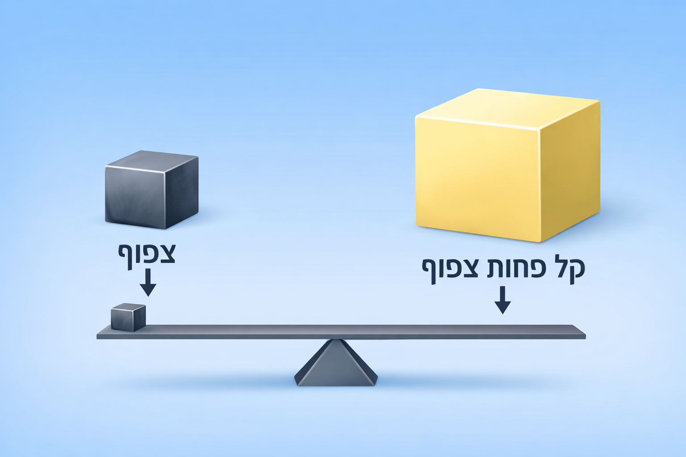

צפיפות היא מדד לכמות החומר ביחס לנפח שלו. ניתן לחשוב על הצפיפות כעל "כמה כבד דבר‑מה ביחס לגודלו". אם גוף קטן מרגיש כבד מאוד – אומרים שהוא צפוף יותר. אם הוא קל לגודלו – צפיפות נמוכה. צפיפות מחושבת על‑ידי חלוקת המסה בנפח: ρ = m/V. מסה היא כמות החומר; נפח הוא המקום שהחומר תופס. משקל הוא הכוח שהכבידה מפעילה על המסה ולכן הוא משתנה ממקום למקום, אך המסה עצמה נשארת קבועה.
כדי לחשב צפיפות של גוף, יש למדוד את מסתו ואת נפחו. מסה נמדדת במאזניים. נפח של גוף בצורת קופסה ניתן לחשב על‑ידי אורך × רוחב × גובה. אך כאשר צורת הגוף אינה רגילה, ניתן להשתמש בשיטת עקירת המים: שקיעת הגוף במים גורמת לדחיקת נפח מים השווה בדיוק לנפח הגוף. לפי המדריך של ACS, עצם הטבול במים דוחה נפח נוזל שווה לנפח העצם. יש למדוד את רמת המים לפני הכנסת הגוף ולאחריה, וההפרש הוא הנפח. 1 מיליליטר מים הוא בדיוק סמ"ק אחד, ולכן אפשר להמיר בין היחידות בקלות.
בחישוב הצפיפות משתמשים בנוסחה: צפיפות = מסה ÷ נפח. שני גופים בעלי אותה מסה אך נפח שונה יהיו בעלי צפיפויות שונות – הגוף עם הנפח הקטן יותר יהיה צפוף יותר.
צפיפות משתנה עם הטמפרטורה. ברוב החומרים, חימום גורם להתפשטות ולכן הצפיפות יורדת. מים הם יוצאי דופן סביב 4°C: כאשר הם קופאים, המבנה הגבישי שלהם יוצר מרווחים ולכן הקרח פחות צפוף מהמים הנוזליים וצף. תופעה זו מאפשרת לחיים באגמים לשרוד בחורף, מפני שהקרח מבודד ושכבת המים שמתחתיו נשארת נוזלית.
כאשר גוף מוכנס לנוזל, הוא יצוף אם צפיפותו נמוכה מצפיפות הנוזל וישקע אם היא גבוהה יותר. עיקרון זה מסביר מדוע ספינות מתכת יכולות לצוף: צורתן יוצרת נפח כולל גדול כך שהצפיפות הממוצעת (כולל האוויר שבתוכן) נמוכה מצפיפות המים.
לערוך ניסוי צבעוני הממחיש צפיפות של נוזלים שונים: במיכל שקוף יוצקים שכבות של דבש, סירופ תירס, סבון כלים, מים, שמן ואלכוהול. כל נוזל נצבע בצבע אחר ומזולף בעדינות כדי שלא יתערבב עם הקודם. מכיוון שלכל נוזל צפיפות שונה, הם מסתדרים בשכבות יציבות ואינם מתערבבים – כך נוצר "קשת" בשישה צבעים. אפשר להסביר שהתמיסה הכבדה (דבש) בתחתית והתמיסה הקלה (אלכוהול) בראש.
להתנסות נוספת אפשר להשתמש בערכה של מוטות בעלי מסה שווה אך נפחים שונים ולמדוד את נפחם בשיטת עקירת מים ואת צפיפותם – פעולה זו מאפשרת להסיק כי חומר בעל נפח קטן יותר ביחס למסה שלו הוא צפוף יותר.
